P47 检查反馈 · 修复前后与C组合
baseline为旧生产；current为未经模板注入的当前生产；review为当前脚本叠加C审核组合。全部本地样例，无真实健康写入或生产验收。
baseline · 390 · pending
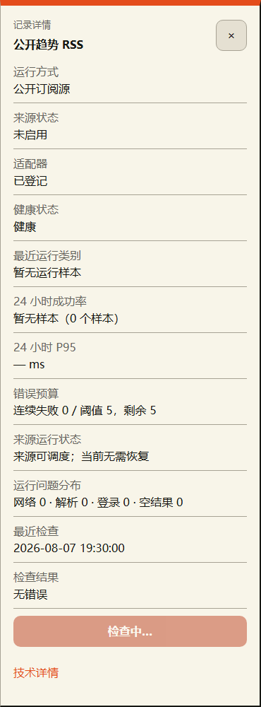
baseline · 390 · other-source-pending
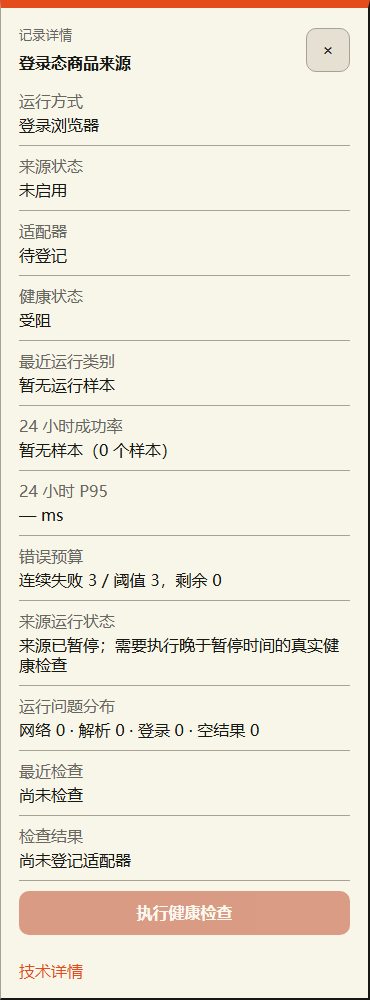
baseline · 390 · rejected-detail

baseline · 390 · rejected-viewport
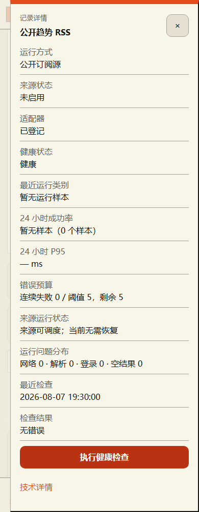
baseline · 390 · after-refresh

baseline · 390 · success-after-concurrent-read
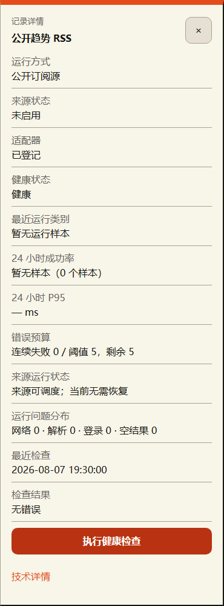
baseline · 390 · blocked-result
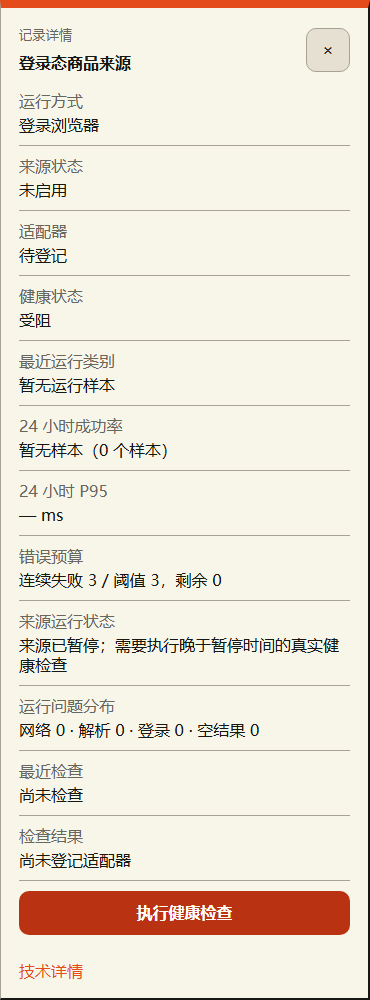
baseline · 760 · pending
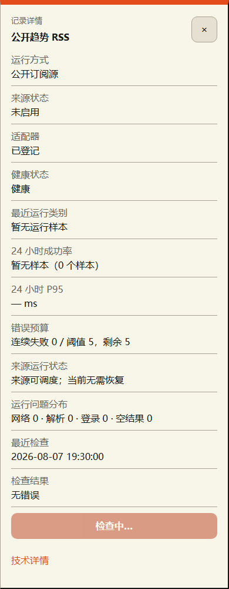
baseline · 760 · other-source-pending
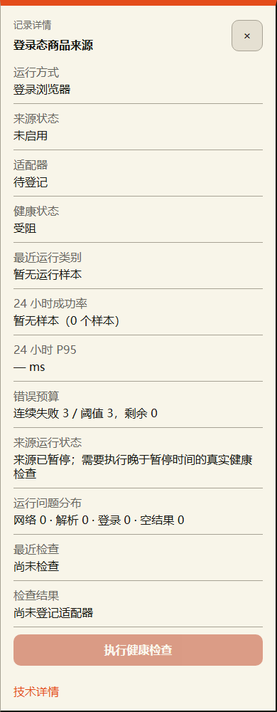
baseline · 760 · rejected-detail

baseline · 760 · rejected-viewport
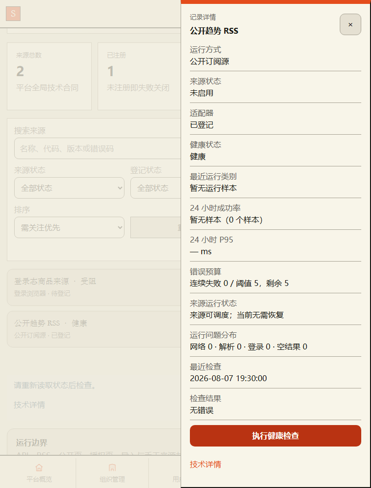
baseline · 760 · after-refresh

baseline · 760 · success-after-concurrent-read
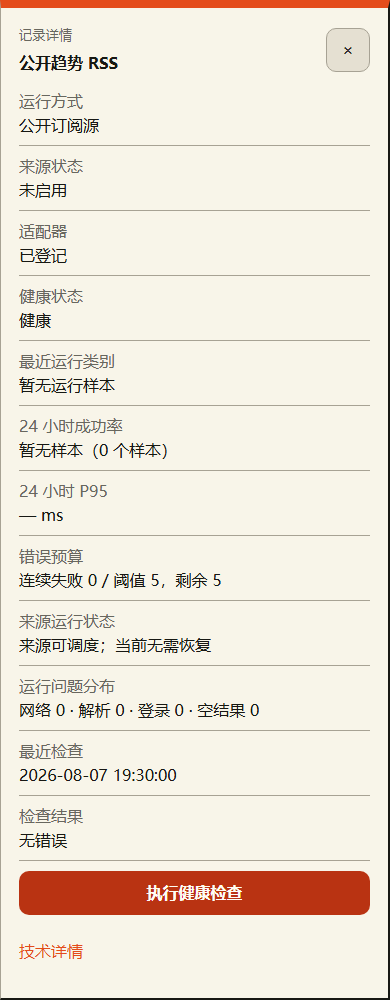
baseline · 760 · blocked-result
baseline · 1440 · desktop-feedback

current · 390 · pending
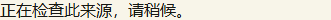
current · 390 · other-source-pending
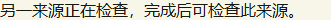
current · 390 · rejected-detail

current · 390 · rejected-viewport
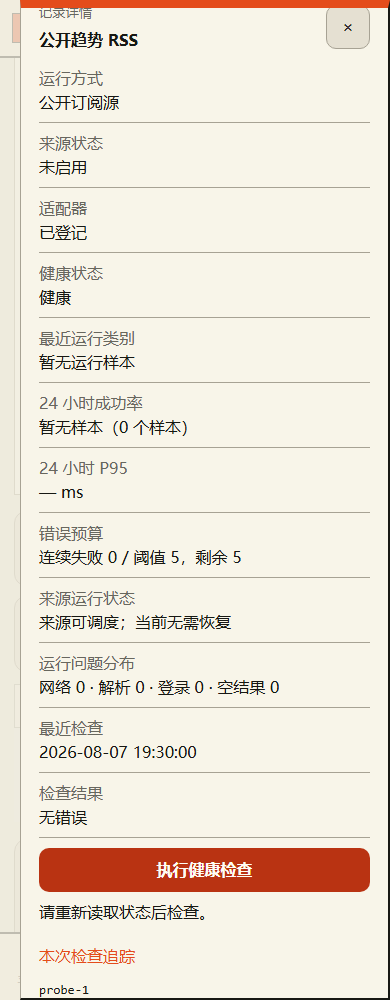
current · 390 · after-refresh
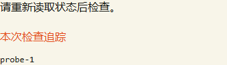
current · 390 · success-after-concurrent-read
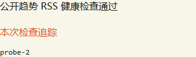
current · 390 · blocked-result
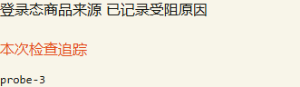
current · 760 · pending
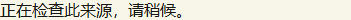
current · 760 · other-source-pending
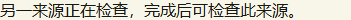
current · 760 · rejected-detail

current · 760 · rejected-viewport
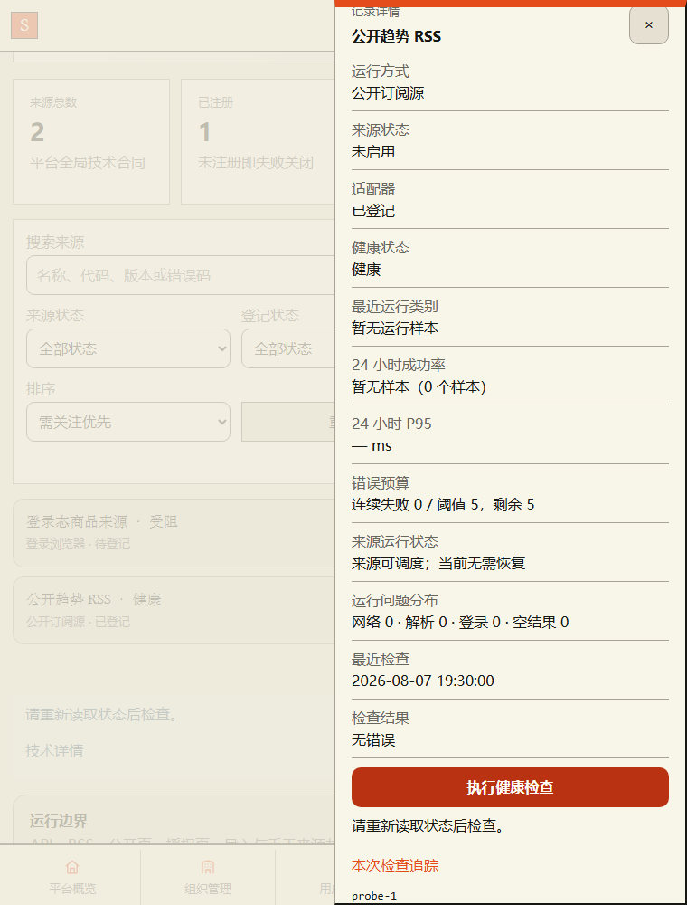
current · 760 · after-refresh
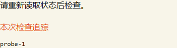
current · 760 · success-after-concurrent-read
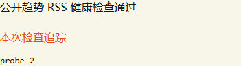
current · 760 · blocked-result
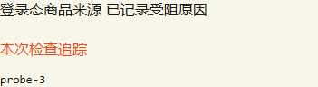
current · 1440 · desktop-feedback
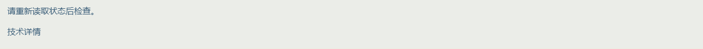
review · 390 · pending
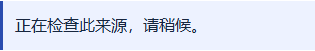
review · 390 · other-source-pending
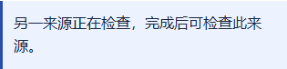
review · 390 · rejected-detail
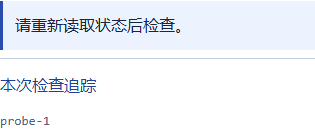
review · 390 · rejected-viewport
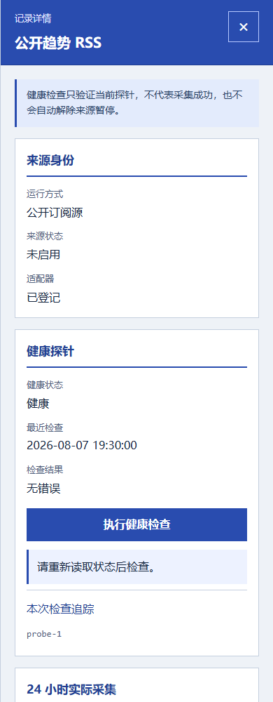
review · 390 · after-refresh

review · 390 · success-after-concurrent-read
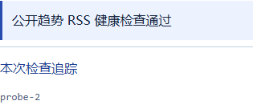
review · 390 · blocked-result
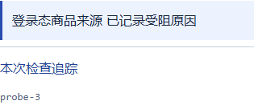
review · 760 · pending
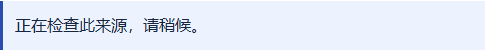
review · 760 · other-source-pending
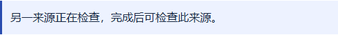
review · 760 · rejected-detail
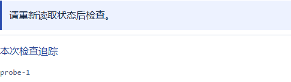
review · 760 · rejected-viewport
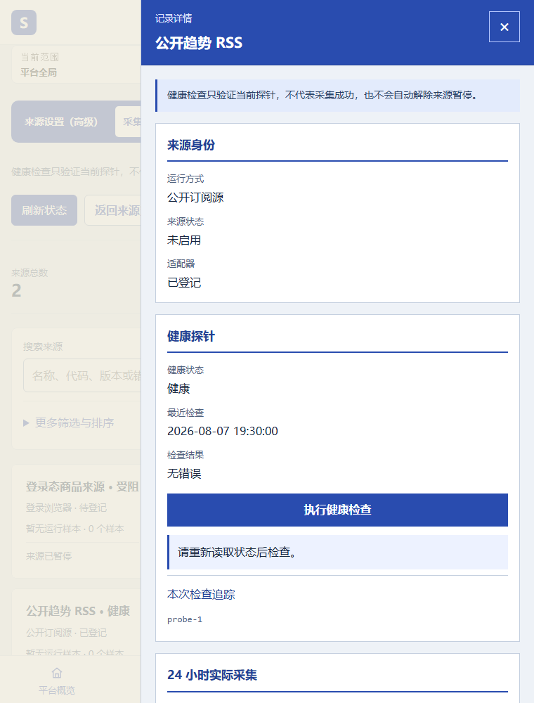
review · 760 · after-refresh

review · 760 · success-after-concurrent-read
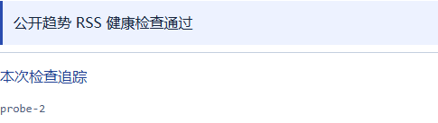
review · 760 · blocked-result
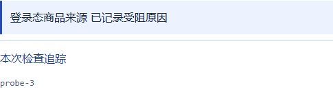